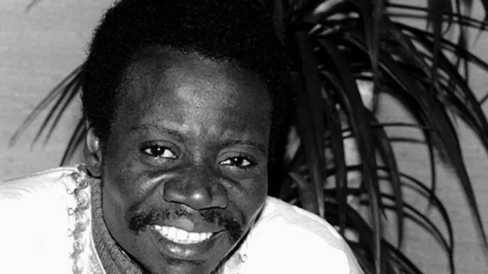
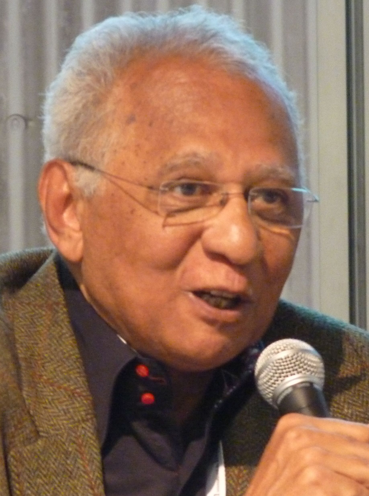
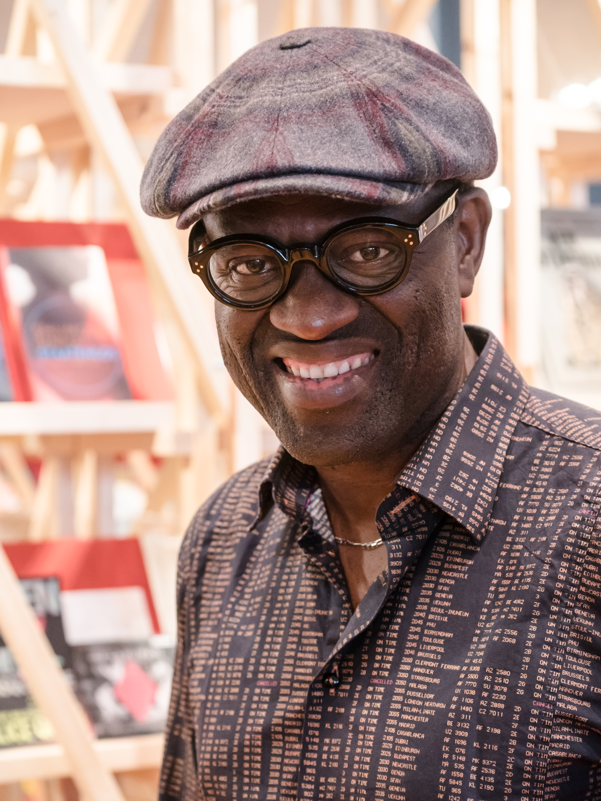
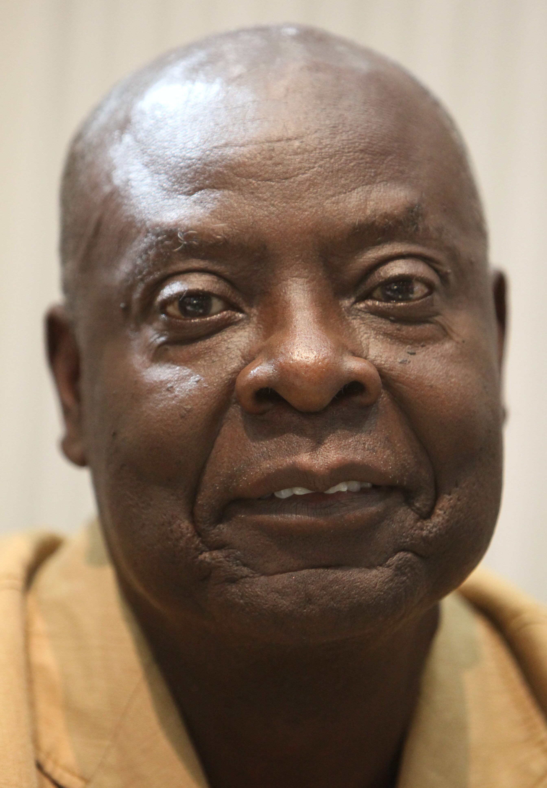
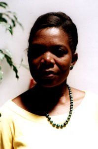
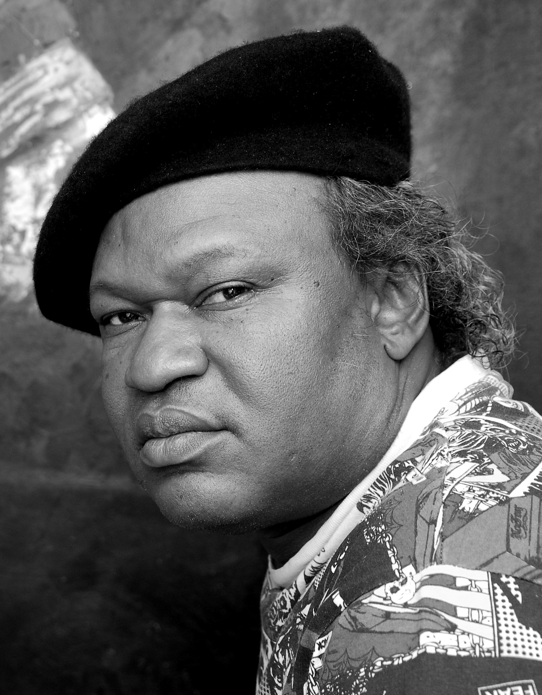

Voix et trajectoires
Auteurs congolais

Sony Labou Tansi
1947—1995
Roman · Théâtre
18 œuvres
Écrivain congolais, dont l’œuvre contribue à la mémoire littéraire et aux imaginaires du continent.
V. Y. Mudimbe
1941—
Essai · Philosophie
24 œuvres
Écrivain congolais, dont l’œuvre contribue à la mémoire littéraire et aux imaginaires du continent.
Fiston Mwanza Mujila
1981—
Poésie · Roman
9 œuvres
Écrivain congolais, dont l’œuvre contribue à la mémoire littéraire et aux imaginaires du continent.
Clémentine Faïk-Nzuji
1944—
Poésie · Linguistique
14 œuvres
Écrivain congolais, dont l’œuvre contribue à la mémoire littéraire et aux imaginaires du continent.
In Koli Jean Bofane
1954—
Roman · Satire
7 œuvres
Écrivain congolais, dont l’œuvre contribue à la mémoire littéraire et aux imaginaires du continent.

Henri Lopes
1937—2023
Roman · Nouvelle
21 œuvres
Écrivain congolais, dont l’œuvre contribue à la mémoire littéraire et aux imaginaires du continent.

Alain Mabanckou
1966—
Roman · Poésie
32 œuvres
Romancier et poète franco-congolais, une voix majeure de la littérature africaine contemporaine.

Emmanuel Dongala
1941—
Roman · Théâtre
16 œuvres
Écrivain et dramaturge congolais, dont les récits interrogent l’histoire et les bouleversements politiques.
Tchicaya U Tam'si
1931—1988
Poésie · Roman
19 œuvres
Poète et écrivain congolais, figure fondatrice de la poésie africaine francophone moderne.

Marie-Léontine Tsibinda
1958—
Poésie · Théâtre
11 œuvres
Poétesse et dramaturge congolaise, elle explore la mémoire, l’exil et la condition féminine.
Kama Sywor Kamanda
1950—
Poésie · Conte
27 œuvres
Écrivain et conteur congolais, reconnu pour une œuvre poétique nourrie de mythes et de récits africains.
Pius Ngandu Nkashama
1946—
Roman · Essai
22 œuvres
Écrivain, linguiste et universitaire congolais, il associe recherche et création littéraire.
Mukala Kadima-Nzuji
1947—
Poésie · Critique
13 œuvres
Poète et critique littéraire congolais, acteur important de la transmission des écritures africaines.
Ndaywel è Nziem
1944—
Histoire · Essai
18 œuvres
Historien et intellectuel congolais, spécialiste de la mémoire et de l’histoire de la RDC.

Barly Baruti
1959—
Bande dessinée · Illustration
15 œuvres
Auteur et dessinateur congolais, il fait rayonner la bande dessinée d’Afrique centrale.
José Tshisungu Wa Tshisungu
1954—
Poésie · Roman
10 œuvres
Poète et romancier congolais, son écriture relie l’expérience de l’exil aux paysages de la mémoire.